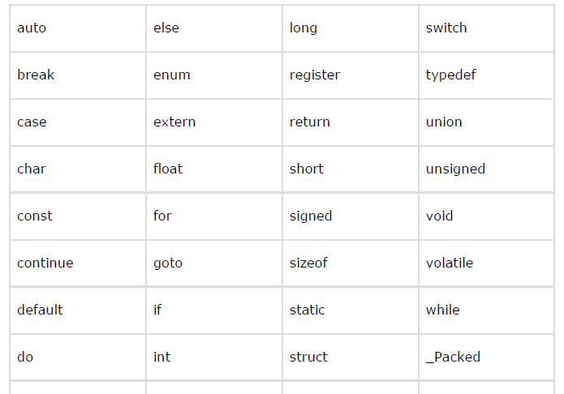

BASIC SYNTAXES In C Programming
You have seen the basic structure of a C program, so it will be easy to understand other basic building blocks of the C programming language.
Tokens in C
A C program consists of various tokens and a token is either a keyword, an
identifier, a constant, a string literal, or a symbol. For example, the following C
statement consists of five tokens:
printf("Hello, World! \n");
The individual tokens are:
printf(
"Hello, World! \n"
)
;
Semicolons
In a C program, the semicolon is a statement terminator. That is, each individual statement must be ended with a semicolon. It indicates the end of one logical entity.
Given below are two different statements:
printf("Hello, World! \n");
return 0;
Comments
Comments are like helping text in your C program and they are ignored by the compiler. They start with /* and terminate with the characters */ as shown below:
/* my first program in C */
You cannot have comments within comments and they do not occur within a string or character literals.
Identifiers
A C identifier is a name used to identify a variable, function, or any other userdefined item. An identifier starts with a letter A to Z, a to z, or an underscore ‘_’ followed by zero or more letters, underscores, and digits (0 to 9).
it does not allow punctuation characters such as @, $, and % within identifiers.C is a case-sensitive programming language. Thus, Manpower and manpower are two different identifiers in C. Here are some examples of acceptable identifiers:
mohd zara abc move_name a_123
myname50 _temp j a23b9 retVal
Keywords
The following list shows the reserved words in C. These reserved words may not be used as constants or variables or any other identifier names.
Whitespace in C
A line containing only whitespace, possibly with a comment, is known as a blank line, and a C compiler totally ignores it.
Whitespace is the term used in C to describe blanks, tabs, newline characters
and comments. Whitespace separates one part of a statement from another and
enables the compiler to identify where one element in a statement, such as int,
ends and the next element begins. Therefore, in the following statement:
int age;
there must be at least one whitespace character (usually a space) between int
and age for the compiler to be able to distinguish them. On the other hand, in
the following statement:
fruit = apples + oranges; // get the total fruit
no whitespace characters are necessary between fruit and =, or between = and
apples, although you are free to include some if you wish to increase readability